사회조사분석사-2급 (2021-03-07 기출문제)
1과목: 조사방법론 I
1. 2차 자료(secondary date) 사용에 관한 설명으로 틀린 것은?
- 자료 수집에 걸리는 시간과 노력을 줄일 수 있다.
- 2차 자료는 가설의 검증을 위해서는 사용할 수 없다.
- 다른 방법에 의해 수집된 자료를 보충하고 타당성을 검토하기 위해 사용한다.
- 연구자가 원하는 개념을 마음대로 측정할 수 없으므로 척도의 타당도가 문제될 수 있다.
(정답률: 76%)

2. 설문지 회수율을 높이는 방안과 가장 거리가 먼 것은?
- 폐쇄형 질문의 수를 가능한 줄인다.
- 독촉편지를 보내거나 독촉전화를 한다.
- 개인신상에 민감한 질문들을 가능한 줄인다.
- 겉표지에 설문내용의 중요성을 부각시켜 응답자가 인식하게 한다.
(정답률: 79%)
3. 다음 중 종단적 연구가 아닌 것은?
- 패널 연구(panel study)
- 코호트 연구
- 시계열 연구
- 단면 연구
(정답률: 74%)
4. 순수실험설계(true experimental design)의 특징이 아닌 것은?
- 독립변수의 조작
- 외생변수의 통제
- 비동질 통제집단의 설정
- 실험집단과 통제집단에 대한 무작위 할당
(정답률: 64%)
5. 우편조사에 관한 설명으로 틀린 것은?
- 응답자의 익명성을 보장하기 어렵다.
- 접근하기 편리하고 광범위한 지역에 걸쳐 조사가 가능하다.
- 응답 대상자 자신이 직접 응답했는지에 대한 통제가 어렵다.
- 회수율이 낮으므로서 서면 또는 전화로 협조를 구하는 것이 좋다.
(정답률: 74%)
6. 실험설계 방법 중 유사실험계에 해당하지 않는 것은?
- 동류집단설계
- 비동질 통제집단설계
- 단일집단 반복실험설계
- 통제집단 사후측정설계
(정답률: 54%)
7. 다음 중 분석 단위가 나머지 셋과 다른 하나는?
- 가구소득 조사
- 대학생의 연령 조사
- 가구당 자동차 보유현황 조사
- 전국 슈퍼마켓당 종업원 수 조사
(정답률: 64%)
8. 다음과 같은 질문의 형태는?
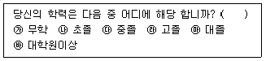
- 개방형
- 양자택일형
- 다지선다형
- 자유답변형
(정답률: 80%)
9. 어떤 대상이나 사람에 대한 일반적인 견해가 그 대상이나 사람의 구체적인 특성을 평가하는데 영향을 미치는 현상이 발생하는 이유는 어떤 효과에 기인한 것인가?
- 후광효과(halo effect)
- 동조효과(conformity effect)
- 위신향상효과(self-lifting effect)
- 체면치레효과(ego-threat effect)
(정답률: 66%)
10. 심층면접법(in-depth interview)에 대한 설명으로 틀린 것은?
- 대체로 대규모 조사연구에 적합하다.
- 같은 표본규모의 전화조사에 비해 대체로 비용이 많이 든다.
- 면접자는 응답자와 친숙한 분위기를 형성하도록 해야 한다.
- 면접자 개인별 차이에서 오는 영향이나 오류를 통제하기 어렵다.
(정답률: 82%)
11. 면접조사에서 면접과정의 관리에 대한 설명으로 맞는 것은?
- 면접지침을 작성하여 응답자들에게 배포한다.
- 면접기간 동안에도 면접원에 대한 철저한 통제가 이루어져야 한다.
- 면접원 교육과정에서 예외적인 상황은 언급하지 않도록 주의한다.
- 면접원에 대한 사전교육은 면접원에 의한 편향(bias)을 크게 할 수 있다.
(정답률: 59%)
12. 과학적 조사가 필요한 사례와 가장 거리가 먼 것은?
- 정량평가 외에 정성평가를 체계화하고 싶을 때
- 임상심리사의 윤리적 갈등을 해소할 필요가 있을 때
- 선임 사회조사분석사의 경험적 지식이 타당한지 알고 싶을 때
- 결혼이주민 조사 시 연자의 문화적 편견을 검토하고 싶을 때
(정답률: 69%)
13. 집단이나 사회의 특성을 분석한 결과를 바탕으로 집단 속 개인에 관한 결론을 도출할 때 발생하는 오류는?
- 제1종 오류
- 생태학적 오류
- 제3종 오류
- 비체계적 오류
(정답률: 77%)
14. 연구문제의 가치를 판단하는 학문적 기준으로 가장 거리가 먼 것은?
- 독창성을 가지고 있어야 한다.
- 경험적 검증가능성이 있어야 한다.
- 이론적인 의의를 가지고 있어야 한다.
- 사회적 쟁점에 대처할 수 있어야 한다.
(정답률: 51%)
15. 다음에 해당하는 연구 형태는?
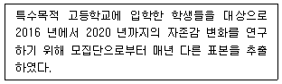
- 패널 연구
- 횡단적 연구
- 동질성집단 연구
- 경향성 연구
(정답률: 57%)
16. 기술적 조사의 연구문제로 적합하지 않은 것은?
- 대도시 인구의 연령별 분포는 어떠한가?
- 어느 도시의 도로확충이 가장 시급한가?
- 아동복지법 개정에 찬성하는 사람의 비율은 얼마인가?
- 가족 내 영유아 수와 의료비 지출은 어떤 관계를 가지는가?
(정답률: 52%)
17. 귀납법에 관한 설명으로 틀린 것은?
- 귀납적 논리의 마지막 단계에서는 가설과 관찰결과를 비교하게 된다.
- 특수한 사실을 전제로 하여 일반적 진리 또는 원리로서의 결론을 내리는 방법이다.
- 관찰된 사실 중에서 공통적인 유형을 객관적으로 증명하기 위하여 통계적 분석이 요구된다.
- 경험의 세계에서 관찰된 많은 사실들이 공통적인 유형으로 전개되는 것을 발견하고 이들의 유형을 객관적인 수준에서 증명하는 것이다.
(정답률: 51%)
18. 측정이 반복됨으로써 얻어지는 학습효과로 인해 실험 대상자의 반응에 영향을 미치는 것은?
- 성숙효과
- 통계적 회귀
- 시험효과
- 실험대상의 소멸
(정답률: 66%)
19. 질문지 작성방법에 관한 설명으로 가장 적합한 것은?
- 질문지는 한번 실시되면 돌이킬 수 없으므로 가능한 많은 양의 정보가 실릴 수 있도록 작성한다.
- 필요한 정보의 종류, 측정방법, 분석할 내용, 분석의 기법까지 모두 미리 고려된 상황에서 질문지를 작성한다.
- 질문지 작성에는 일정한 원리와 이론이 적용되는 것이므로 이에 대한 내용을 숙지한 후 상당한 시간과 노력을 들여 신중하게 작성한다.
- 동일한 양의 정보를 담고 있어도 설문지의 분량은 가급적 적어야하기 때문에, 필요한 정보의 획득을 위한 질문문항 외에 다른 요소들은 설문지에 포함시키지 않아야 한다.
(정답률: 52%)
20. 경험적 연구방법에 관한 설명으로 틀린 것은?
- 참여관찰의 결과는 일반화의 가능성이 높다.
- 내용분석은 질적인 내용을 양적 자료로 전환하는 방법이다.
- 조사연구는 대규모의 모집단 특성을 기술하는데 유용하다.
- 실험은 외생변수들의 영향을 배제할 수 있다는 장점을 가지고 있다.
(정답률: 57%)
21. 다음 질문항목의 문제점은?
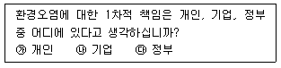
- 응답항목간의 내용이 중복되어 있다.
- 대답 가능한 응답을 모두 제시해주지 않았다.
- 의미가 명확하게 구분되는 단어를 사용하지 않았다.
- 조사가 임의로 응답자들에 대한 가정을 하고 있다.
(정답률: 64%)
22. 참여관찰(participant observation)에 대한 설명으로 틀린 것은?
- 연구자는 상황에 대한 통제를 할 수 없다.
- 양적자료이기 때문에 대규모 모집단에 대한 기술이 쉽다.
- 연구자가 관심을 가지고 있는 변수들 간의 관계를 현실상황에서 체계적으로 관찰하는 연구조사방법이다.
- 독립변수를 조작하는 현장시험과는 다르며, 자연 상태에서 연구대상을 관찰해 그들의 관계를 규명하는 것이다.
(정답률: 76%)
23. 좋은 가설이 되기 위한 요건과 가장 거리가 먼 것은?
- 검증 가능해야 한다.
- 입증된 결과는 일반화가 가능해야 한다.
- 사용된 변수는 계량화가 가능해야 한다.
- 추상적이며 되도록 긴 문장으로 표현을 해야 한다.
(정답률: 84%)
24. 통계청에서 실시하는 인구센서스에 해당하는 조사방법은?
- 사례조사
- 패널조사
- 횡단조사
- 코호트(cohort)조사
(정답률: 52%)
25. 시간과 비용이 많이 들며, 조사원과 응답자의 상호 이해 부족으로 오류가 개입될 가능성이 높고, 질문과정에서 조사원이 응답자의 응답에 영향을 미칠 수 있는 자료수집 방법은?
- 대인면접법
- 전화면접법
- 우편조사법
- 인터넷조사법
(정답률: 79%)
26. 다음에서 설명하는 실험설계의 타당성을 저해하는 외생변수는?
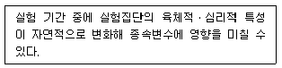
- 시험효과
- 표본의 편중
- 성숙효과
- 우연적 사건
(정답률: 77%)
27. 설문조사의 질문항목 배치에 대한 설명으로 틀린 것은?
- 민감한 질문이나 주관식 질문은 앞에 배치한다.
- 서로 연결되는 질문은 논리적순서대로 배치한다.
- 비슷한 형태로 질문을 계속하면 정형화 된 불성실 응답이 발생할 수 있다.
- 문항이 담고 있는 내용의 범위가 넓은 것에서부터 점차 좁아지도록 배열하는 것이 좋다.
(정답률: 82%)
28. 과학적 방법에 관한 설명으로 맞는 것은?
- 선별적 관찰에 근거한다.
- 연구의 반복을 요구하지 않는다.
- 연역법적 논리의 상대적 우월성을 지지한다.
- 모든 지식은 잠정적이라는 태도에 기반한다.
(정답률: 66%)
29. 사례연구의 단계를 순서대로 나열한 것은?
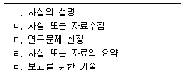
- ㄱ → ㄷ → ㄴ → ㄹ → ㅁ
- ㄷ → ㄱ → ㄹ → ㄴ → ㅁ
- ㄷ → ㄴ → ㄱ → ㅁ → ㄹ
- ㄷ → ㄴ → ㄹ → ㄱ → ㅁ
(정답률: 66%)
30. 관찰 대상자가 관찰사실을 아는지에 대한 여부를 기준으로 관찰기법을 분류한 것은?
- 직접/간접/ 관찰
- 자연적/인위적 관찰
- 공개적/비공개적 관찰
- 체계적/비체계적 관찰
(정답률: 77%)
2과목: 조사방법론 II
31. 전수조사(population survey)와 비교한 표본조사(sample survey)의 장점으로 틀린 것은?
- 표본오류가 줄어든다.
- 시간과 비용을 절약할 수 있다.
- 단시간 내에 많은 정보를 얻을 수 있다.
- 조사과정을 보다 잘 통제할수 있어서 정확한 자료를 얻을 수 있다.
(정답률: 74%)
32. 다음 설명에 해당되는 척도는?
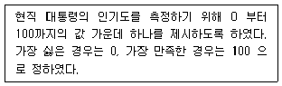
- 명목척도
- 등간척도
- 서열척도
- 비율척도
(정답률: 39%)
33. 비확률표집방법이 아닌 것은?
- 편의표집
- 유의표집
- 집락표집
- 눈덩이표집
(정답률: 70%)
34. 일반적인 표본추출과정의 순서를 바르게 나열한 것은?
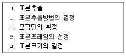
- ㄴ → ㄹ → ㄷ → ㅁ → ㄱ
- ㄷ → ㄹ → ㄴ → ㅁ → ㄱ
- ㄷ → ㄴ → ㄹ → ㄱ → ㅁ
- ㄹ → ㄷ → ㄴ → ㅁ → ㄱ
(정답률: 73%)
35. 계통표집(systematic sampling)에 관한 설명으로 가장 거리가 먼 것은?
- 각 층위별 정보를 얻을 수 있다.
- 단순무작위표집의 대용으로 사용될 수 있다.
- 표집틀에 주기성이 없는 경우 모집단을 잘 반영할 수 있다.
- 최초의 표본집단을 무작위로 선정한 다음에 k번째마다 표본을 추출하는 것을 의미한다.
(정답률: 52%)
36. 다음 중 범주형 변수(categorical variable)인 것은?
- 자녀수
- 지능지수(IQ)
- 원화로 나타낸 연간소득
- 3단계(상, 중, 하)로 나눈 계층적 지위
(정답률: 67%)
37. 측정의 신뢰도를 높이는 방법으로 틀린 것은?
- 측정도구의 모호성을 제거한다.
- 면접자들은 일관된 태도로 면접을 한다.
- 가능하면 단일 항목을 이용하여 개념이나 속성을 측정한다.
- 조사 대상자가 관심 없거나 너무 어려워하는 내용은 제외한다.
(정답률: 66%)
38. 층화표본추출방법에 관한 설명으로 틀린 것은?
- 확률표본추출방법 중 시간, 비용 및 노력을 가장 절약할 수 있다.
- 무작위로 표본을 추출할 때보다 표본의 대표성을 높일 수 있는 방법이다.
- 각 소집단에서 뽑는 표본 수에 따라 비례·불비례층화추출방법으로 나뉜다.
- 모집단을 특정한 기준에 따라 서로 상이한 소집단으로 나누고 이들 각각의 소집단들로부터 빈도에 따라 적절한 일정수의 표본을 무작위로 추출하는 방법이다.
(정답률: 46%)
39. 기준관련타당도(criterion-related validity)와 가장 거리가 먼 것은?
- 경험적 타당도
- 이론적 타당도
- 예측적 타당도
- 동시적 타당도
(정답률: 45%)
40. 신뢰도 측정방법의 유형으로 틀린 것은?
- 복수양식법
- 재검사법
- 내적일관성법
- 다속성다측정방법
(정답률: 61%)
41. 측정도구의 타당도와 신뢰도에 대한 설명으로 맞는 것은?
- 측정값은 참값, 확률오차, 체계오차의 합과 같다.
- 측정오차는 체계오차의 부분도 포함하는데 이는 신뢰도와 관계가 있다.
- 확률오차=0, 체계오차≠0인 경우, 측정도구는 타당하지만 신뢰할 수 없다.
- 체계오차=0, 확률오차≠0인 경우, 측정도구는 신뢰할 수 있지만 타당하지 않다.
(정답률: 37%)
42. 측정에 대한 설명으로 틀린 것은?
- 질적 속성을 양적 속성으로 전환하는 작업이다.
- 경험의 세계와 개념적·추상적 세계를 연결하는 수단이다.
- 조사대상의 속성을 추상적 개념으로 전환시키는 과정이다.
- 이론을 구성하는 개념들을 현실 세계에서 관찰이 가능한 자료와 연결해주는 과정이다.
(정답률: 66%)
43. 신뢰도 측정방법 중 설문지 혹은 시험지의 문항들을 두 부분으로 나누어서 각 부분에서 얻은 측정값들을 두 번의 조사에서 얻어진 것처럼 간주하여 그 사이의 상관계수를 구하여 검사하는 방법은?
- 반분법
- 재검사법
- 동형방법
- 상관분석법
(정답률: 71%)
44. 대학수학능력시험의 타당도를 평가하기 위해 대학수학능력시험 점수와 대학 진학 후 학업성적과의 상관관계를 조사하는 방법은?
- 내용타당도
- 논리적타당도
- 내적타당도
- 기준관련타당도
(정답률: 51%)
45. 표집과 관련된 용어에 대한 설명으로 틀린 것은?
- 관찰단위란 직접적인 조사대상을 의미한다.
- 모집단이란 우리가 규명하고자 하는 집단의 총체이다.
- 표집단위란 표집과정의 각 단계에서의 표집대상을 지칭한다.
- 표집간격이란 표본을 추출할 때 추출되는 표집단위와 단위 간의 간격을 의미한다.
(정답률: 42%)
46. 과녁의 가운데를 조준하고 쏜 화살 5개 모두 제일 가장자리의 동일한 위치에 집중되었을 때 신뢰도와 타당도의 개념에 관한 설명으로 맞는 것은?
- 신뢰도와 타당도가 모두 높다.
- 신뢰도와 타당도가 모두 낮다.
- 신뢰도는 높지만 타당도는 낮다.
- 타당도는 높지만 신뢰도는 낮다.
(정답률: 61%)
47. 리커트(Likert) 척도의 장점이 아닌 것은?
- 적은 문항으로도 높은 타당도를 얻을 수 있어서 매우 경제적이다.
- 한 항목에 대한 응답의 범위에 따라 측정의 정밀성을 확보할 수 있다.
- 응답 카테고리가 명백하게 서열화되어 응답자에게 혼란을 주지 않는다.
- 항목의 우호성 또는 비우호성을 평가하기 위해 평가자를 활용하므로 객관적이다.
(정답률: 51%)
48. 표집오차(sampling error)에 대한 설명으로 틀린 것은?
- 표본의 크기가 클수록 표집오차는 작아진다.
- 표본의 분산이 작을수록 표집오차는 작아진다.
- 표집오차란 통계량들이 모수 주위에 분산되어 있는 정도를 의미한다.
- 표본의 크기가 같을 때 단순무작위 표집에서보다 집락표집에서 표집오차가 작다.
(정답률: 53%)
49. 다음 중 표본의 대표성이 가장 큰 표본추출방법은?
- 편의표집
- 판단표집
- 군집표집
- 할당표집
(정답률: 61%)
50. 서열척도를 이용한 측정방법은?
- 등급법
- 고정총합척도법
- 순위법
- 어의차이척도법
(정답률: 65%)
51. 무작위표집과 비교할 때 할당표집(quota sampling)의 장점이 아닌 것은?
- 비용이 적게 든다.
- 표본오차가 적을 가능성이 높다.
- 신속한 결과를 원할 때 사용 가능하다.
- 각 집단을 적절히 대표하게 하는 층화의 효과가 있다.
(정답률: 46%)
52. 이론적 개념을 측정가능한 수준의 변수로 전환시키는 작업 과정은?
- 서열화
- 수량화
- 척도화
- 조작화
(정답률: 59%)
53. 대상자들의 종교를 불교, 기독교, 가톨릭, 기타의 범주로 나누어 조사한 경우 측정수준은?
- 서열척도
- 명목척도
- 등간척도
- 비율척도
(정답률: 76%)
54. 다음 중 비율척도가 아닌 것은?
- 온도
- 투표율
- 소득 금액
- 몸무게
(정답률: 70%)
55. 다음의 가설을 검증하기 위해 국가별 통계 자료를 수집한다고 할 때, ‘출생률’은 어떤 변수인가?
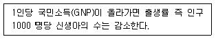
- 매개변수
- 독립변수
- 외적변수
- 종속변수
(정답률: 72%)
56. 측정오차의 발생원인과 가장 거리가 먼 것은?
- 통계분석기법
- 측정시점의 환경요인
- 측정방법 자체의 문제
- 측정시점에 따른 측정대상자의 변화
(정답률: 64%)
57. 사회조사에서 척도에 대한설명으로 틀린 것은?
- 불연속성은 척도의 중요한 속성이다.
- 척도는 변수에 대한 양적인 측정치를 제공한다.
- 척도는 여러 개의 지표를 하나의 점수로 나타낸다.
- 척도를 통하여 하나의 지표로서 제대로 측정하기 어려운 복합적인 개념을 측정할 수 있다.
(정답률: 60%)
58. 개념(concept)에 관한 설명으로 틀린 것은?
- 개념은 이론의 핵심적 구성요소이다.
- 개념은 특정대상의 속성을 나타낸다.
- 개념 자체를 직접 경험적으로 측정할 수 있다.
- 개념의 역할은 실제연구에서 연구방향을 제시해준다.
(정답률: 64%)
59. 다음 중 군집표집의 추정 효율이 가장 높은 경우는?
- 집락 간 평균이 서로 다른 경우
- 각 집락이 모집단의 축소판일 경우
- 각 집락 내 관측값들이 비슷할 경우
- 각 집락마다 집락들의 특성이 서로 다른 경우
(정답률: 62%)
60. 단순무작위표본추출에 따른 표본평균의 분포가 갖는 특성이 아닌 것은?
- 표본평균의 분포는 모집단 평균을 중심으로 대칭형이다.
- 표본평균 분포의 평균은 모집단의 평균과 같은 것은 아니다.
- 큰 표본을 사용할수록 표본평균의 분포는 모집단 평균 근처에 집중적으로 나타난다.
- 표본평균의 분포는 모집단 평균 근처가 가장 밀집되어 있고 평균에서 떨어질수록 적어진다.
(정답률: 39%)
3과목: 사회통계
61. 다음은 무엇에 관한 설명인가?
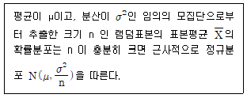
- 이항분포
- 정규분포
- 표본분포
- 중심극한정리
(정답률: 43%)
62. 어느 질병에 대한 3가지 치료약의 효과를 비교하기 위한 일원분산분석 모형 Xij=µ+αi+εij에서 오차항 εij에 대한 가정으로 틀린 것은?
- εij의 기댓값은 0이 아니다.
- εij의 분포는 정규분포를 따른다.
- εij의 분산은 어떤 i, j에 대해서도 일정하다.
- 임의의 εij와
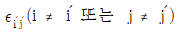
는 서로 독립이다.
(정답률: 39%)
63. 중회귀분석에서 회귀제곱합(SSR)이 150이고, 오차제곱합(SSE)이 50인 경우, 결정계수는?
- 0.25
- 0.3
- 0.75
- 1.1
(정답률: 45%)
64. 어느 지역의 유권자 중 940명을 임의로 추출하여 가장 선호하는 정당을 조사한 결과를 연령대별로 정리하여 다음의 이차원 분할표를 얻었고, 분할표 분석결과는 다음과 같다. 유의수준 0.⑤에서 연령대와 선호하는 정당과의 관련성을 검정하기 위한 검정결과에 대한 해석으로 맞는 것은?
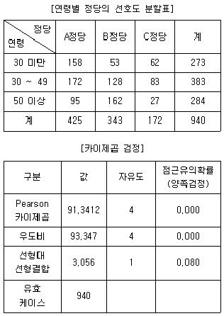
- 카이제곱 통계량이 유의수준보다 크므로 귀무가설을 기각한다.
- 우도비 통계량이 유의수준보다 크므로 귀무가설을 기각할 수 없다.
- 우도비 통계량에 대한 유의확률이 유의수준보다 작으므로 귀무가설을 기각할 수 없다.
- 카이제곱 통계량에 대한 유의확률이 유의수준보다 작으므로 귀무가설을 기각한다.
(정답률: 39%)
65. 평균이 70이고, 표준편차가 5인 정규분포를 따르는 집단에서 추출된 1개의 관찰값이 80이었다고 하자, 이 개체의 상대적 위치를 나타내는 표준화점수는?
- -2
- 0.025
- 2
- 2.5
(정답률: 57%)
66. 검정통계량의 분포가 나머지 셋과 다른 것은?
- 모분산이 미지인 정규모집단의 모평균에 대한 검정
- 독립인 두 정규모집단의 모분산의 비에 대한 검정
- 모분산이 미지이고 동일한 두 정규모집단의 모평균의 차에 대한 검정
- 단순회귀모형 y=β0+β1x+ε에서 모회귀직선 E(y)=β0+β1x의 기울기 β1에 관한 검정
(정답률: 37%)
67. 단순회귀모형 yi=β0+β1xi+εi에 대한 분산분석표가 다음과 같다. 설명변수와 반응변수가 양의 상관관계를 가질 때, H0:β1=0대 H1:β1≠0을 검정하기 위한 t-검정통계량의 값은?
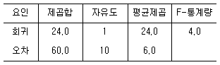
- -2
- -1
- 1
- 2
(정답률: 32%)
68. 공정한 주사위 1개를 20번 던지는 실험에서 1의 눈을 관찰한 횟수를 확률변수 X라 하고, 정규근사를 이용하여 P(X ≥ 4)의 근사값을 구하려 할 때, 연속성 수정을 고려한 근사식으로 맞는 것은? (단, Z는 표준정규분포를 따르는 확률변수이다.)
- P(Z ≥ 0.1)
- P(Z ≥ 0.4)
- P(Z ≥ 0.7)
- P(Z ≥ 1)
(정답률: 20%)
69. 상관계수(피어슨 상관계수)에 대한 설명으로 가장 거리가 먼 것은?
- 선형관계에 대한 설명에 사용된다.
- 상관계수의 값은 변수의 단위가 달라지면 영향을 받는다.
- 상관계수의 부호는 회귀계수의 기울기(b)의 부호와 항상 같다.
- 상관계수의 절대치가 클수록 두 변수의 선형관계가 강하다고 할 수 있다.
(정답률: 35%)
70. x를 독립변수로 y를 종속변수로 하여 선형회귀분석을 하고자한다. 다음의 요약 자료를 이용하여 추정회귀직선의 기울기와 절편을 구하면?
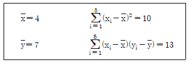
- 기울기 = 0.77, 절편 = 1.80
- 기울기 = 0.77, 절편 = 3.92
- 기울기 = 1.30, 절편 = 1.80
- 기울기 = 1.30, 절편 = 3.92
(정답률: 45%)
71. 어느 지역의 청년취업률을 알아보기 위해 조사한 500명 중 400명이 취업을 한 것으로 나타냈다. 이 지역의 청년취업률에 대한 95% 신뢰구간은? (단, Z가 표준정규분포를 따르는 확률변수일 때, P(Z > 1.96)=0.025이다.)
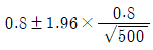
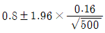
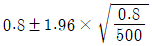
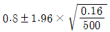
(정답률: 36%)
72. 20개로 이루어진 자료를 순서대로 나열하면 다음과 같을 때, 중위수와 사분위 범위(interquartile range)의 값을 순서대로 나열한 것은?
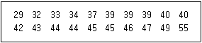
- 40, 7
- 40, 8
- 41, 7
- 41, 8
(정답률: 43%)
73. 자동차부품을 생산하는 회사에서 품질을 관리하기 위하여 생산된 제품 가운데 100개를 추출하여 조사 하였다. 그 중 부적합품수를 X라 할 때, X의 기댓값이 5이면, X의 분산은?
- 0.⑤
- 0.475
- 4.75
- 9.5
(정답률: 44%)
74. 평균이 40, 중앙값이 38, 표준편차가 4일 때 변이계수(coefficient of variation)는?
- 4%
- 10%
- 10.5%
- 40%
(정답률: 56%)
75. 표본자료로부터 추정한 모평균 µ에 대한 95% 신뢰구간이 (-0.042, 0.522)일 때, 유의수준 0.⑤에서 귀무가설 H0:µ=0 대립가설 H1:µ≠0의 검증 결과는 어떻게 해석할 수 있는가?
- 신뢰구간이 0을 포함하기 때문에 귀무가설을 기각할 수 없다.
- 신뢰구간의 상한이 0.522로 0보다 상당히 크기 때문에 귀무가설을 기각해야 한다.
- 신뢰구간과 가설검증은 무관하기 때문에 신뢰구간을 기초로 검증에 대한 어떠한 결론도 내릴 수 없다.
- 신뢰구간을 계산할 때 표준정규분포의 임계값을 사용했는지 또는 t분포의 임계값을 사용했는지에 따라 해석이 다르다.
(정답률: 39%)
76. k개의 독립변수 xi(i=1, 2, …, k)와 종속변수 y에 대한 중희귀모형 y=α+β1x1+…+βkxk+ε을 고려하여, n개의 자료애 대해 중희귀분석을 실시하고자 한다. 총 편차
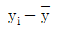
를 분해하여 얻을 수 있는 3개의 제곱합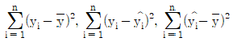
의 자유도를 각각 구하여 순서대로 나열한 것은?- n, n-k, k
- n, n-k-1, k-1
- n-1, n-k-1, k
- n-1, n-k-1, k-1
(정답률: 41%)
77. 10m당 평균 1개의 흠집이 나타나는 전선이 있다. 이 전선 10m를 구입하였을 때, 발견되는 흠집수의 확률분포는?
- 이항분포
- 초기하분포
- 기하분포
- 포아송분포
(정답률: 49%)
78. 추정에 대한 설명으로 맞는 것은?
- 검정력은 작을수록 바람직하다.
- 신뢰구간은 넓을수록 바람직하다.
- 표본의 수는 통계적 추론에 영향을 미치지 않는 표본조사시의 문제이다.
- 모든 다른 조건이 동일하다면 표본의 수가 클수록 신뢰구간의 길이는 짧아진다.
(정답률: 43%)
79. 다음 설명 중 틀린 것은? (단, sX, sY는 각각 X와 Y의 표준편차이다.)
- Y=-2X+3일 때 sY=4sX이다.
- 상자그림(BOX plot)은 여러 집단의 분포를 비교하는데 많이 사용한다.
- 상관계수가 0이라 하더라도 두 변수의 관련성이 있는 경우도 있다.
- 변이계수(coefficient of variation)는 여러 집단의 분산을 상대적으로 비교할 때 사용된다.
(정답률: 35%)
80. 확률변수 X는 평균이 2이고, 표준편차가 2인 분포를 따를 때, Y=-2X+10의 평균과 표준편차는?
- 평균:6, 표준편차:4
- 평균:6, 표준편차:6
- 평균:14, 표준편차:4
- 평균:14, 표준편차:6
(정답률: 48%)
81. 어느 대형마트 고객관리팀에서는 다음과 같은 기준에 따라 매일 고객을 분류하여 관리한다. 어느 특정한 날 마트를 방문한 고객들의 자료를 분류한 결과 A그룹이 30%, B그룹이 50%, C그룹이 20%인 것으로 나타났다. 이 날 마트를 방문한 고객 중 임의로 4명을 택할 때, 이들 중 3명만이 B그룹에 속할 확률은?
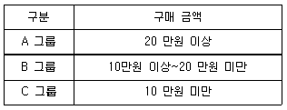
- 0.25
- 0.27
- 0.37
- 0.39
(정답률: 44%)
82. 다음은 왼손으로 글자를 쓰는 사람 8명에 대하여 왼손의 악력 X와 오른손의 악력 Y를 측정하여 정리한 결과이다. 왼손으로 글자를 쓰는 사람들의 왼손 악력이 오른손 악력보다 강하다고 할 수 있는가에 대해 유의수준 5%에서 검정하고자 한다. 검정통계량 T의 값과 기각역을 구하면?
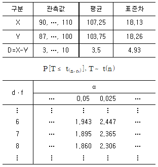
- T=0.71, T≥1.860
- T=2.01, T≥1.895
- T=0.71, |T|≥2.365
- T=2.01, |T|≥2.365
(정답률: 27%)
83. 다음은 3개의 자료 A, B, C에 대한 산점도이다. 이 자료에 대한 상관계수가 -0.93, 0.20, 0.70 중 하나일 때, 산점도와 해당하는 상관계수의 값을 올바르게 짝지은 것은?
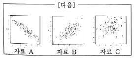
- 자료 A:-0.93, 자료 B:0.20, 자료 C:0.70
- 자료 A:-0.93, 자료 B:0.70, 자료 C:0.20
- 자료 A:0.20, 자료 B:-0.93, 자료 C:0.70
- 자료 A:0.20, 자료 B:0.70, 자료 C:-0.93
(정답률: 50%)
84. 다음은 독립변수가 k개인 경우의 중회귀모형이다. 최소제곱법에 의한 회귀계수 벡터 β의 추정식 b는? (단, X′은 X의 치환행렬이다.)
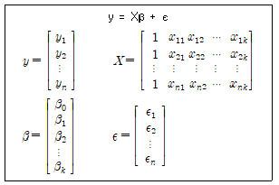
- b=X′y
- b=(X′X)-1y
- b=X-1y
- b=(X′X)-1X′y
(정답률: 32%)
85. 어느 여행사에서 앞으로 1년 이내에 어학연수를 원하는 대학생들의 비율을 조사하기를 원한다. 95% 신뢰수준에서 참 비율과의 오차가 3%이내가 되도록 하기 위하여 최소한 몇 명의 대학생을 조사해야 하는가? (단, Z0.⑤=1.645, X0.025=1.96이고, 표본비율 p는 0.5로 추측한다.)
- 250
- 435
- 752
- 1068
(정답률: 34%)
86. 정규모집단 N(μ, σ2)으로 부터 추출한 크기 n의 임의표본 X1, X2, …, Xn에 근거한 표본분포에 대한 설명으로 틀린 것은? (단,
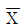
는 표본평균, s2은 불편분산이다.) 와 s2은 확률적으로 독립이다.
와 s2은 확률적으로 독립이다. 는 정규분포를 따르며 평균은 μ 이고, 분산은 σ2이다.
는 정규분포를 따르며 평균은 μ 이고, 분산은 σ2이다.- (n-1)s2은 자유도가 n-1 인 카이제곱분포를 따른다.
- 스튜던트화된 확률변수
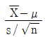
는 자유도가 n-1인 t-분포를 따른다.
(정답률: 26%)
87. 어떤 공장에서 생산된 전자제품 중 5개의 표본에서 1개 이상의 부적합품이 발견되면, 그 날의 생산된 전제품을 불합격으로 처리하고 그렇지 않으면 합격으로 처리한다. 이 공장의 생산공정의 모부적합품률이 0.1일 때, 어느 날 생산된 전제품이 불합격 처리될 확률은? (단, 95 = 59049이다.)
- 0.10745
- 0.28672
- 0.40951
- 0.42114
(정답률: 49%)
88. 다음 중 바람직한 추정량(estimator)의 선정기준이 아닌 것은?
- 할당성(quota)
- 효율성(efficiency)
- 일치성(consistency)
- 불편성(unbiasedness)
(정답률: 45%)
89. 다음 표는 빨강, 파랑, 노랑 3가지 색상에 대한 선호도가 성별에 따라 차이가 있는지를 알아보기 위해 초등학교 남학생 200명과 여학생 200명을 임의로 추출하여 선호도를 조사한 분할표이다. 성별에 따라 선호하는 색상에 차이가 없다면, 파랑을 선호하는 여학생 수에 대한 기대도수의 추정값은?
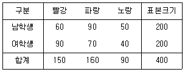
- 70
- 75
- 80
- 85
(정답률: 42%)
90. 도수분포가 비대칭이고 극단치들이 있을 때 보다 적절한 중심성향 척도는?
- 산술평균
- 중위수
- 조화평균
- 최빈수
(정답률: 54%)
91. 제1종 오류를 범할 확률의 허용한계를 뜻하는 통계적 용어는?
- 기각역
- 유의수준
- 검정통계량
- 대립가설
(정답률: 57%)
92. 독립변수가 3개인 중회귀분석 결과가 다음과 같을 때, 오차분산의 추정값은?
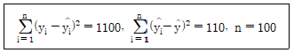
- 11.20
- 11.32
- 11.46
- 11.58
(정답률: 33%)
93. 가설검정에 관한 설명으로 맞는 것은?
- p-값이 유의수준보다 크면 귀무가설을 기각한다.
- 1종 오류와 2종 오류 중 더 심각한 오류는 1종 오류이다.
- 일반적으로 표본자료에 의해 입증하고자 하는 가설을 귀무가설로 세운다.
- 양측검정으로 유의하지 않은 자료라도 단측검정을 하면 유의할 수도 있다.
(정답률: 26%)
94. 어떤 화학약품을 생산하는 공정에서 온도에 따라 수율(%)에 차이가 있는가를 알아보고자 4개의 온도수준에 다음과 같이 완전임의 배열법을 적용하여 실험하여 분산분석표를 작성하였다. ㉠~㉣에 해당하는 값은?
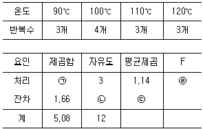
- ㉠:3.42, ㉡:9, ㉢:0.18, ㉣:6.33
- ㉠:3.42, ㉡:10, ㉢:0.17, ㉣:6.71
- ㉠:3.42, ㉡:9, ㉢:0.18, ㉣:1.04
- ㉠:6.74, ㉡:10, ㉢:0.17, ㉣:6.71
(정답률: 45%)
95. 확률변수 X의 분포의 자유도가 각각 a와 b인 F(a, b)를 따른다면 확률변수 Y=1/X의 분포는?
- F(a, b)
- F(b, a)
- F(1/a, 1/b)
- F(1/b, 1/a)
(정답률: 37%)
96. 다음 분산분석표의 ㉠~㉢에 들어갈 값은?
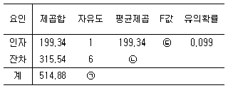
- ㉠:7, ㉡:52.59, ㉢:2.58
- ㉠:7, ㉡:52.59, ㉢:3.79
- ㉠:7, ㉡:1893.24, ㉢:2.58
- ㉠:7, ㉡:1893.24, ㉢:9.50
(정답률: 52%)
97. 똑같은 크기의 사과 10개를 5명의 어린이에게 나누어주는 방법의 수는? (단,
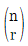
은 n개 중에서 r개를 선택하는 조합의 수이다.)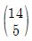
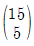
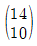
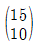
(정답률: 37%)
98. 관측값 12개를 갖고 수행한 단순회귀분석에서 회귀직선의 유의성 검정을 위해 작성된 분산분석표가 다음과 같다. ㉠~㉢에 해당하는 값은?
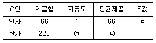
- ㉠: 10, ㉡: 22, ㉢: 3
- ㉠: 10, ㉡: 220, ㉢: 3.67
- ㉠: 11, ㉡: 22, ㉢: 3.3
- ㉠: 11, ㉡: 220, ㉢: 0.3
(정답률: 47%)
99. 평균이 μ이고, 분산이 σ2=9인 정규모집단으로부터 추출한 크기 100인 확률표본의 표본평균
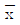
를 이용하여 가설 H0:μ=0 vs H1:μ ＞ 0을 유의수준 0.⑤에서 검정하는 경우 기각역이 Z0 ≥ 1.645이다. 이 때 검정통계량 Z0에 해당하는 것은?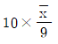
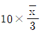
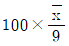
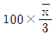
(정답률: 32%)
100. X는 정규분포를 따르는 확률변수이다. P(X ≥ 1)=0.16, P(X ≥ 0.5)=0.31, P(X ＜ 0)=0.5일 때, P(0.5 ＜ X ＜ 1)의 값은?
- 0.15
- 0.19
- 0.235
- 0.335
(정답률: 48%)